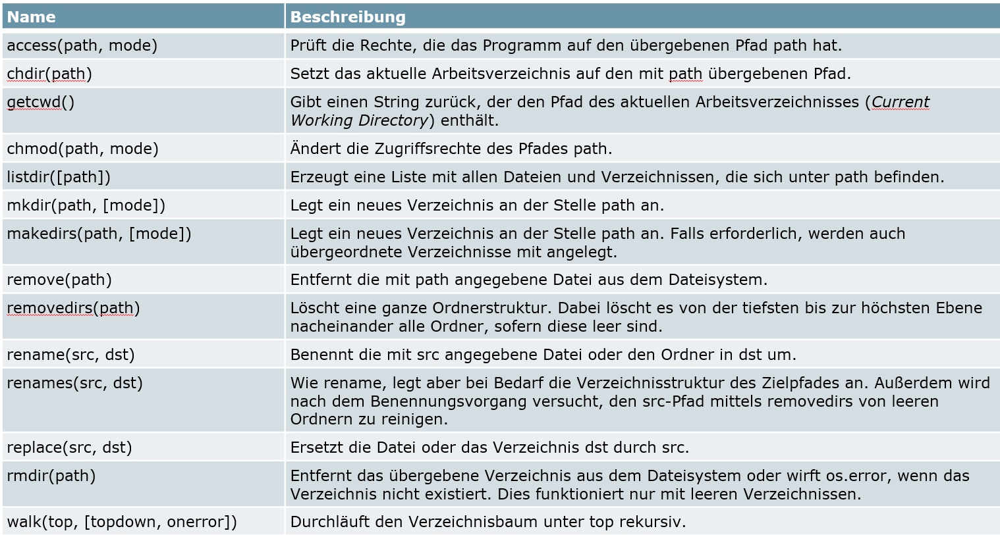

Module
Diese Umgebungen können jeweils mit Paket-Managern verwaltet werden. Pakete Manager sind Paketverwaltungsprogramme, die es erlauben in Python Libraries zu installieren und deinstallieren.
Anaconda
condaPip
pip
pip install paket #install paket
pip uninstall paket #uninstall paket
pip help #verschiedenen Befehle und Optionen aufrufen
pip list #aktuell installierten Pakete mit Versionsnummern
pip show paket #informiert über ein installiertes Paket Environments
conda hat auch die Fähigkeit isolierte (virtuelle) Python Environments zu erstellen, welche unterschiedliche Python Versionen und Packet-Versionen installiert haben.
V1: Via Anaconda Promt (command line):
conda create -–name ihr_name python = 3.9.2
conda activate ihr_name
conda install numpy
conda install matplotlib
conda install pandas
Module Import
Um Globale Module in Python Scripts verwenden zu können müssen Sie in die Python Umgebung eingebunden werden Module werden mit der import-Anweisung eingebunden. import modul_name
import math
import random
#Äquivalent
import math, random
math.sin(1)Spezifische Funktionen können aber auch direkt importiert werden. from modul import function
from math import sin, pi
sin(pi) #0Bibliothek und mit all ihren Funktionen können aber auch mit * komplett in globalen Namensraum eingebunden werden. from modul import *
from math import *
sin(pi) #0Interferenz mit vorhandener Referenz!
Zur Schreiberleichterung können neue Namen für Namensräume definiert werden. import module as new_name
import math as m
m.pi #3.14...Auch beim importieren von Objekten/Funktionen in den globalen Namensraum können diese umbenannt werden. from module import function as new_name
from math import sqrt as wurzel
wurzel(6)Mit der eingebetteten Funktion dir(module) kann man sich die innerhalb eines Moduls ausgeben lassen. Wenn man dir() einfach so leer ohne Argument ausführt, werden alle belegten Variablenamen (Namespace) angezeigt.
Die help(module) Funktion kann auch bei Modulen und Funktionen angewandt werden, um Hilfestellungen zu erhalten.
Eigene Module
Genau genommen ist jedes Python Programm automatisch auch ein (lokales) Modul. Es kann also jedes selber geschriebene py-Skript ebenfalls von anderen lokalen Skripts importiert werden.
Wenn sich Module in einem anderen Ordner (Speicherort) als das jetzige Skript befinden, müssen diese relativ zum aktiven Skript importiert werden! from mein_unterordner import mein_modul
Falls mehrere Unterordner verwendet werden, müssen deren Namen beim Importieren mit einem «.» getrennt werden.
from mein_unterordner.my_subsub_folder import mein_modul mit mein_modul.my_function() können auch einzelene Funktionen genutzt werden.
Eine der einfacheren Varianten dieses zu importieren ist, den von Skript zum File zum
import sys
sys.path.append(r"../top_folder") #relative Path to Top Folder
#import as if it is in the same folder
import my_top_module
my_top_module.my_function()Modul Name
Jedes Python Skript besitzt das __name__ Attribut.
Dieses Attribut wird beim Ausführen bzw. Importieren des jeweiligen Files gesetzt und beschreibt den Namen des Skriptes. Speziell jedoch ist, dass das von der Hauptskript welches ausgeführt wurde den Namen __main__ bekommt.
if __name__ == "__main__": Ist NUR true wenn das Skript direkt ausgeführt wurde.
System Modul
Die Standard- Bibliothek sys in Python bietet Funktionen für die Interaktion mit dem Interpreter der verwendeten Python Umgebung. Als Standard-Bibliothek ist sys immer verfügbar und muss nicht installiert werden. import sys
OS Modul
Das standard OS Modul enthält Funktionen welche Operation-System spezifisch sind (zB Windows Funktionen) import os
os.getcwd() #aktuelle Arbeitsverzeichnis
os.listdir() #auflistung Dateien und Unterordner
os.mkdir("test_folder") #wird ein neues Verzeichnis generiert
os.chdir("./test_folder") #Wechseln des Arbeitsverzeichnisses
os.rename("test_folder","new_test") #Umbenennung von Dateien oder Ordnern
os.rmdir("new_test") #löscht Verzeichnisse 
Pakete
Aus einem Ordner kann einfach ein Paket gemacht werden, indem ein (ein leeres) Python File mit dem Namen __init__.py darin erstellt wird.
Im Init – File selbst können nun alle relativen imports des Paketes gemacht werden, um alle relevanten Funktionen und Module in der obersten Ebene des Paketes zur Verfügung zu stellen.
# In __init__.py
# Bereitstellen einer Funktion
from unser_paket.unter_ordner_1.modul_1 import f1
# Bereitstellen eines Modules (.py)
from unser_paket.unter_ordner_2 import modul_2
from unser_paket.unter_ordner_2 import modul_3
# Benutzung im main
import unser_paket
unser_paket.f1()
unser_paket.modul_2.f2()
unser_paket.modul_3.f3()Für das Erstellen von Unterpaketen muss jeweils in den Unterordnern ebenfalls ein __init__.py File angelegt werden.